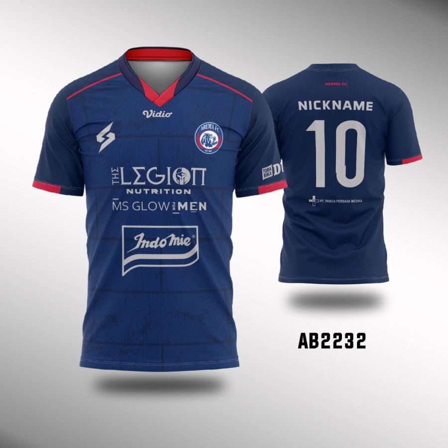
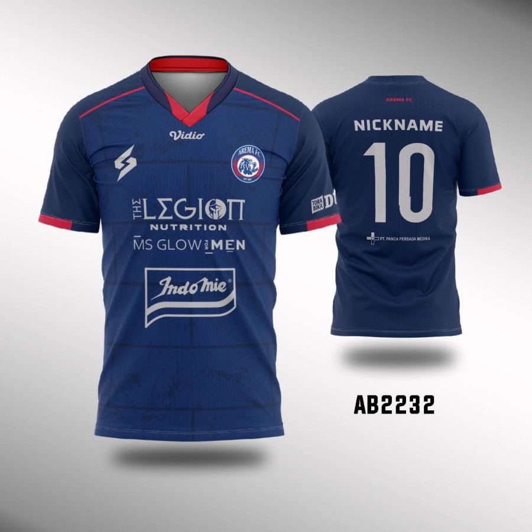

=== Detail Jersey Home Arema Custom ===
Kondisi: Baru Berat: 230 Gram
Bahan Kaos : Full Dry Fit - tidak panas Bahan Cetak : Print Sublimasi menggunakan tinta Epson
Sesuai gambar
Kondisi: Baru Berat: 230 Gram
Bahan Kaos : Full Dry Fit - tidak panas Bahan Cetak : Print Sublimasi menggunakan tinta Epson
Sesuai gambar
Copyright @2022 Hafizh Sandika Akbar